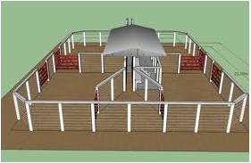

Segura Peão
TL: 2 segundos
ML: 128 MB
Você é o boi Zebu. Você está preso em um curral. Este curral é separado em várias partes, e existe uma porteira que conecta duas partes. A porteira só se abre depois de um tempo determinado (automaticamente). Você está na parte identificada pelo número 1.

Supondo que você não gasta tempo indo de uma parte à outra, quando será possível chegar até a parte N?
Entrada
A primeira linha de cada caso de teste contém os números N (1 <= N <= 10^4) e M (1 <= M <= 10^5), indicando o número de partes do curral e o número de porteiras respectivamente. Nas próximas M linhas haverá três números inteiros a, b (1 <= a, b <= N) e c (1 <= c <= 10^9), indicando que as partes a e b estão conectadas por uma porteira que só se abre no tempo c. Uma porteira pode magicamente conectar a mesma parte, e pode existir mais de uma porteira que conecte duas partes.
Saída
Imprima quando será possível chegar até a parte N.
Exemplos
Entrada de Teste
4 4
1 2 1
2 3 2
1 4 5
3 4 1
3 3
1 2 10
2 3 5
1 1 1
Saída de Teste
2
10